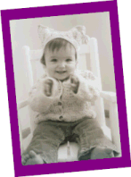
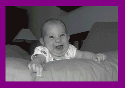

|
Testimonials
| 
|
|
"Our 14-month old was entranced by the video the first time she saw it! She
interacted with it by laughing and pointing at the screen during her favorite
parts. As an educator and grandparent I can recommend this without reservation
as an educationally sound and developmentally appropriate learning tool for
children."
Mary Harley, M.Ed.,Ed.S.
Duluth, Georgia
"Not only does my 19 month old love your Baby Babble video, but her older
sister (3 yrs) and brother (5 yrs) love it too!"
Karen R.
Chicago, IL
|
"I just wanted to let you know what a great DVD Baby Babble is and how much my
9 month old son enjoys it. I am a pediatrician and I was looking for
educational/developmental DVDs online and came across baby babble. I
purchased it and my son loved it from the first time he saw it. I
feel he has become more vocal since he began watching this program. Thank
you so much for making this available and keep up the great work!!"
Vinitha Moopen, MD
"I can't say enough about this tape. I bought it because my son who is 18
months was not making many intelligible words. The parent tutorial helped me
know what to do to help him advance his speech.
I only wish I would have known about it when Enzio was younger. I concentrated
on all the Baby Einstein videos which now when I look back on how wonderful I
thought they were, I realize that they weren't, not for language skills anyway.
This video was created by SPEECH PATHOLOGISTS which is why it really touches on
language/sign language. Don't hesitate to get this one...you won't be waisting
money. They use alot of sounds and show you some basic sign language to help
your child communicate better so that your child does not get
frustrated. I only hope they come out with more videos like this one. My
son watches this with me everyday and we do all the sounds & signs. My son
just went to have his hearing tested and to be evaluated for a language delay
and when the speech pathologists were playing with him, I felt like I was
watching this video. They did almost everything that is in this video. His
language is already improving. This tape is one you can pop-in and if you have
to catch up on laundry,dishes etc., you won't feel guilty."
M. Peruzzi
Clinton Township, MI
"Just wanted to let you know that my 2 children LOVE your DVD! It is the only
one of FIFTEEN that I bought which caught their interest. They are 8 months and
18 months old."
Lisa DeRea Frederiksen
"I just wanted to take a moment to tell you how much our 26 month old son is
enjoying your Baby Babble video. Recently Zack was evaluated by the
Maryland Infants and Toddler program and was found to have a significant
language delay. I was very interested in finding products to encourage
his communication skills, and specifically to reinforce the basic sign language
signs we are trying to teach him.
We have had the video less than a week and he is already using several
signs. In particular the video taught him the "help" sign. We had
been working with him on "help", but he didn't seem to get it. After
several viewings of your video, he now says and signs help.
Zack's favorite part of the video is the dog eating the carrots --- he just
burst out with giggles and rolls on the floor when the dog appears.
I also wanted to mention we have lots of other videos, such as Baby Einstein,
Brainy Baby, Sesame Street, etc, but Baby Babble is by far his favorite.
And as I already mentioned, he is putting the skills taught in the video to use
in his everyday interactions."
Julie W.
Maryland
"Great Job! My son (2 years old) & my daughter (9 months old) love the
video. My son has learned so much from the "Baby Babble" DVD, and it is
actually his favorite video from all the videos he has at home. My wife & I
are very pleased to see that the DVD is both entertaining & educational.
This is without a doubt the best video on the market. I cannot tell you enough
how happy we are with your video and really hope there is a follow-up video in
the very near future."
Thania and Jesus
Parents
"I have a son with developmental delays. There are not many programs on TV that
my son enjoys. I have read great reviews about Baby Babble, so I thought why
not give it a try. I was amazed from the first second of this DVD. My son was
glued to TV set. He took a seat on the couch and watched, quietly. I rewinded
it and let him watch again. This time he repeated some of the sounds on TV and
he become very excited when the mouse was going in and out of cheese holes.
That was very cute. I turn this DVD daily for him-- its almost like having
Speech Therapist come to my house. I really appreciate the work you put into
this DVD and hope to see similar products. My son seems more attentive now
during play and shows the "more" sign whenever asked. Again, thanks for the
wonderful video."
Julia
Mom of Daniel, a special child
"Thank you, Cory and Amy. We recently purchased Baby Babble for our children.
It’s about time someone got it! We have a 7 month old girl, a 2 year old girl
and a 3 ½ year old boy who I on the autistic spectrum. He is non verbal and I
particularly bought it for him. The video is very well done and incorporates so
many factors of speech and language development and setting the stage for
emerging literacy. You’ve got a great product and you can definitely effect
your audience in a very positive way! You have made a difference. Thanks for
using your knowledge and expertise to present a truly purposeful
speech/language video. I hope many families reap the rewards!"
Adrienne Robertiello
emerging literacy guru
"My 20 month old son is speech delayed and we have had this DVD for about
a month now. He really loves it and is benefitting from it. He has learned some
of the signs already and I think this can only help him. I always watch it with
him and we work on this together. I do recommend this for other moms. I think
it would even be great for younger babies who don't even have speech delays."
Crystal Harris
Carlsbad, CA
"I wrote to you not too long ago letting you know how helpful I found Baby
Babble to be. At 19 months old my daughter's pediatrician didn't think that my
daughter was saying enough words. She seemed to think she was going to be
behind (she was pre-mature). She suggested that I take her to an Audiologist
and that she should go to speech therapy. I am naturally a worry wart, but I
knew deep down that my daughter was fine. Instead of following the advice of my
daughter's doctor, I purchased Baby Babble. Now at 21 months old my daughter is
saying over 50 words/sounds. Coincidence or not, THANK YOU!!!!!"
Diane P.
"We have 'Baby Babble' which was made by 2 pediatric speech pathologists. I
highly recommend it. Both of my boys enjoy it and my youngest has really come a
long way since he got it. His speech pathologist thinks the combination of this
video and him being at a real receptive point in speech development were key to
his recent explosion of words (he'd rather imitate a video than a person--less
pressure)."
Vicki
Babycenter.com Post
"I am the mother of a 4 year old autistic boy. Up until the time he started
watching your video (last month), he could only say a couple of words. Since
watching your video is so enormously motivating to him, he has memorized the
entire program. When he says the words presented in your video, he says them in
appropriate context. His pre-k teacher, OT, and SLP are shocked! They have been
working with him for 1 1/2 years with little progress. He has watched all the
Baby Einstein videos, as well as Baby Bumble Bee....you name it. Nothing has
held his attention or interest like your tape....he simply loves it and has
started learning to speak because of it."
Sara Polito
"My daughter is 2.5 years old, has autism, and has just begun to talk. She
responded with great enthusiasm to this DVD, vocalizing the entire time she
watched it. Whereas she has never been able/willing to imitate facial
expressions in person, she tries to imitate the faces in this DVD, which may
help her with her oral motor difficulties. She has also picked up the sign
language much faster from the DVD than she does in person."
Anonymous Parent
USA
"My 11-month old first viewed the tape at play group. Throughout the viewing,
she was very responsive—clapping her hands adorably to the music, imitating
mouth movements, and repeating the sounds that she heard. Each time she watches
the video she learns something new!"
Erin U.
Carmel, IN
"I taught my daughter 5-10 signs but had not yet taught her how to sign
"please." After a long day of requests to be picked up, I told her that I
wished that she'd say please. She suddenly, to my utter surprise, signed the
word. I was shocked. She learned how to sign "please" from watching Baby
Babble. I also heard her in her crib last night saying "up...down" -- which she
also learned from watching Baby Babble!"
Christine
Eden Prairie, MN
"I have a 3-year old with Down Syndrome. He has a severe speech delay and he
loves your DVD. That is all he wants to watch. He does the mouth excerises and
says every word on the DVD. I just wanted to let you know that you did an
awesome job. I hope you will make more videos in the future."
Rachelle Melvin
USA
"My child was completely tuned into Baby Babble. The toys were perfect. I
really liked the speech and sign language included in the video."
Jessie L.
St. Paul, MN
| 
|
|
"This is the best money I have ever spent on my child! She loves the video!"
Sandra M.
Indianapolis, IN
|
"Wow! This DVD really works! I purchased this DVD a week ago after being told
that my son was showing signs of having a developemental delay. My son will run
to the TV when I put this DVD in and he will sit or dance while watching it. He
has added to his vocabulary almost 100% and is able to use the sign language
that is shown in this DVD. I am amazed and thrilled at the results. I would
recommend this DVD for anyone who is looking for help in regards to late
talking little ones."
Wendy Helton
Florida
"Both of our boys love to watch Baby Babble. Carson, our 19 month old, loves to
imitate the sounds, repeat the words and has learned some sign language,
including "more" and "please". Both Carson and Ethan (4 yrs) actually sit still
while they watch it. They love it!"
Christy
Shakopee, Minnesota
"My son imitates the entire video from start to finish! He loves it! He makes
all the sounds, copies all the faces, and imitates all the sign language.
Watching this video is one of his favorite things to do! Thanks so much!"
Stacie G.
Fishers, IN
We want to hear from you! Let us know what your child thinks of our video.
Please email us. Be sure to include your first
name, your child’s first name, your child's age, what your child is saying and
doing, any additional comments, and your city and state. We can't wait to hear
from you!
|
|